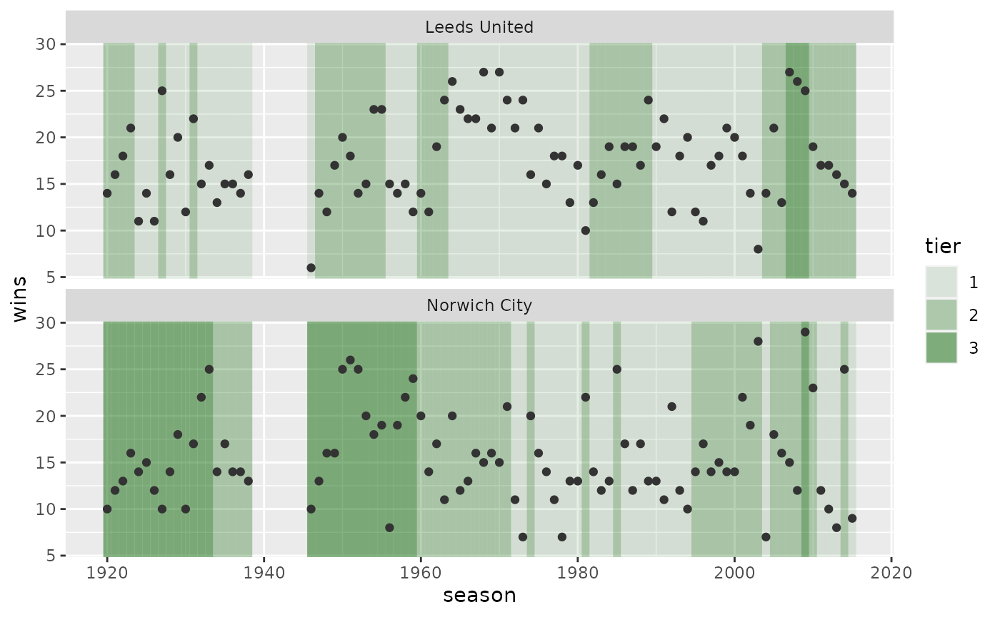
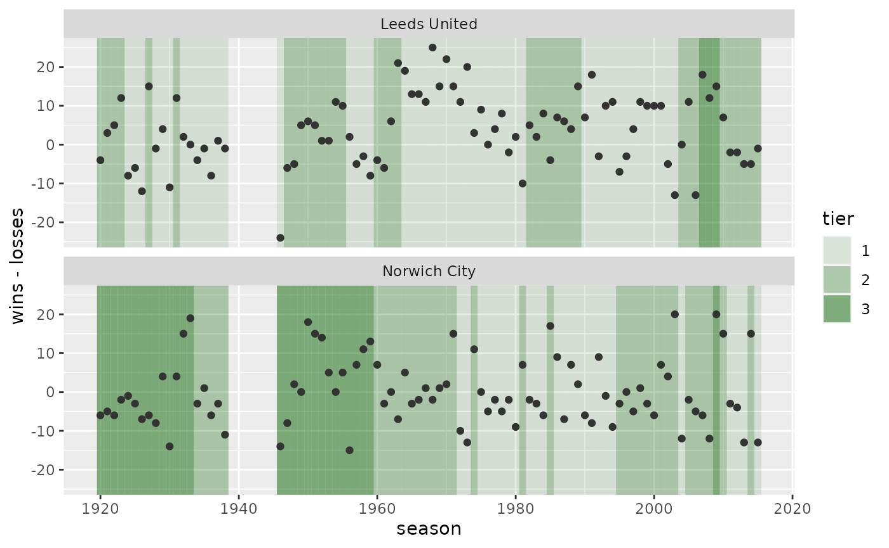

ussie
ussie.Rmd
library(ussie)
library(dplyr)
#>
#> Attaching package: 'dplyr'
#> The following objects are masked from 'package:stats':
#>
#> filter, lag
#> The following objects are masked from 'package:base':
#>
#> intersect, setdiff, setequal, unionussie helps standardize European football data tables retrieved from the engsoccer package for each country.
spain <- uss_make_matches(engsoccerdata::spain, "Spain")
glimpse(spain)
#> Rows: 23,915
#> Columns: 8
#> $ country <chr> "Spain", "Spain", "Spain", "Spain", "Spain", "Spain", "S…
#> $ tier <fct> 1, 1, 1, 1, 1, 1, 1, 1, 1, 1, 1, 1, 1, 1, 1, 1, 1, 1, 1,…
#> $ season <int> 1928, 1928, 1928, 1928, 1928, 1928, 1928, 1928, 1928, 19…
#> $ date <date> 1929-02-10, 1929-02-10, 1929-02-10, 1929-02-10, 1929-02…
#> $ home <chr> "Arenas de Getxo", "Espanyol Barcelona", "Real Madrid", …
#> $ visitor <chr> "Atletico Madrid", "Real Union", "CE Europa", "Athletic …
#> $ goals_home <int> 2, 3, 5, 1, 0, 1, 9, 0, 3, 5, 3, 3, 1, 0, 2, 1, 2, 3, 2,…
#> $ goals_visitor <int> 3, 2, 0, 1, 2, 2, 0, 3, 1, 2, 0, 1, 1, 4, 1, 2, 1, 0, 2,…Get data from a specific country
uss_get_matches() can retrieve data for a specific country (among those available) within the engsoccer dataset
spain_matches <- uss_get_matches("spain") |> glimpse()
#> Rows: 23,915
#> Columns: 8
#> $ country <chr> "Spain", "Spain", "Spain", "Spain", "Spain", "Spain", "S…
#> $ tier <fct> 1, 1, 1, 1, 1, 1, 1, 1, 1, 1, 1, 1, 1, 1, 1, 1, 1, 1, 1,…
#> $ season <int> 1928, 1928, 1928, 1928, 1928, 1928, 1928, 1928, 1928, 19…
#> $ date <date> 1929-02-10, 1929-02-10, 1929-02-10, 1929-02-10, 1929-02…
#> $ home <chr> "Arenas de Getxo", "Espanyol Barcelona", "Real Madrid", …
#> $ visitor <chr> "Atletico Madrid", "Real Union", "CE Europa", "Athletic …
#> $ goals_home <int> 2, 3, 5, 1, 0, 1, 9, 0, 3, 5, 3, 3, 1, 0, 2, 1, 2, 3, 2,…
#> $ goals_visitor <int> 3, 2, 0, 1, 2, 2, 0, 3, 1, 2, 0, 1, 1, 4, 1, 2, 1, 0, 2,…We can add filtering conditions as well:
spain_1987_matches <- uss_get_matches("spain", season == 1987,
home == "Real Madrid" | visitor == "Real Madrid") |>
uss_make_teams_matches()We can also accumulate seasons:
spain_1987_matches |>
uss_make_seasons_cumulative() |>
dplyr::arrange(team, date)
#> # A tibble: 76 × 12
#> # Groups: country, tier, season, team [20]
#> country tier season team date matches wins draws losses points
#> <chr> <fct> <int> <chr> <date> <int> <int> <int> <int> <int>
#> 1 Spain 1 1987 Athletic B… 1987-10-31 1 0 1 0 1
#> 2 Spain 1 1987 Athletic B… 1988-03-12 2 0 1 1 1
#> 3 Spain 1 1987 Atletico M… 1987-11-07 1 1 0 0 2
#> 4 Spain 1 1987 Atletico M… 1988-03-20 2 1 0 1 2
#> 5 Spain 1 1987 CA Osasuna 1987-09-20 1 0 0 1 0
#> 6 Spain 1 1987 CA Osasuna 1988-02-13 2 1 0 1 2
#> 7 Spain 1 1987 Cadiz CF 1987-08-30 1 0 0 1 0
#> 8 Spain 1 1987 Cadiz CF 1988-01-31 2 0 0 2 0
#> 9 Spain 1 1987 CD Logrones 1987-12-06 1 0 0 1 0
#> 10 Spain 1 1987 CD Logrones 1988-04-10 2 0 0 2 0
#> # … with 66 more rows, and 2 more variables: goals_for <int>,
#> # goals_against <int>
#> # ℹ Use `print(n = ...)` to see more rows, and `colnames()` to see all variable namesPlot results over seasons
Of the countries included in uss_countries(), only "england" has data for more than one tier, where we can see the effects of relegation and promotion. You can use uss_plot_seasons_tiers() to look at performance over seasons, using data returned from uss_make_seasons_final():
leeds_norwich <-
uss_get_matches("england") |>
uss_make_teams_matches() |>
filter(team %in% c("Leeds United", "Norwich City")) |>
uss_make_seasons_final() |>
arrange(team, season)
leeds_norwich
#> # A tibble: 178 × 12
#> # Groups: country, season, tier [155]
#> country tier season team date matches wins draws losses points
#> <chr> <fct> <int> <chr> <date> <int> <int> <int> <int> <int>
#> 1 England 2 1920 Leeds Unit… 1921-05-07 42 14 10 18 38
#> 2 England 2 1921 Leeds Unit… 1922-05-06 42 16 13 13 45
#> 3 England 2 1922 Leeds Unit… 1923-05-05 42 18 11 13 47
#> 4 England 2 1923 Leeds Unit… 1924-05-03 42 21 12 9 54
#> 5 England 1 1924 Leeds Unit… 1925-05-02 42 11 12 19 34
#> 6 England 1 1925 Leeds Unit… 1926-05-01 42 14 8 20 36
#> 7 England 1 1926 Leeds Unit… 1927-05-07 42 11 8 23 30
#> 8 England 2 1927 Leeds Unit… 1928-05-05 42 25 7 10 57
#> 9 England 1 1928 Leeds Unit… 1929-05-04 42 16 9 17 41
#> 10 England 1 1929 Leeds Unit… 1930-05-03 42 20 6 16 46
#> # … with 168 more rows, and 2 more variables: goals_for <int>,
#> # goals_against <int>
#> # ℹ Use `print(n = ...)` to see more rows, and `colnames()` to see all variable namesThe default is to show the wins on the y-axis:
uss_plot_seasons_tiers(leeds_norwich)
You can provide an argument, aes_y, where you can supply an expression just as you would for ggplot2:
uss_plot_seasons_tiers(leeds_norwich, aes_y = wins - losses)